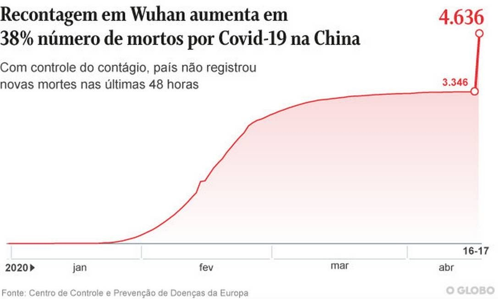
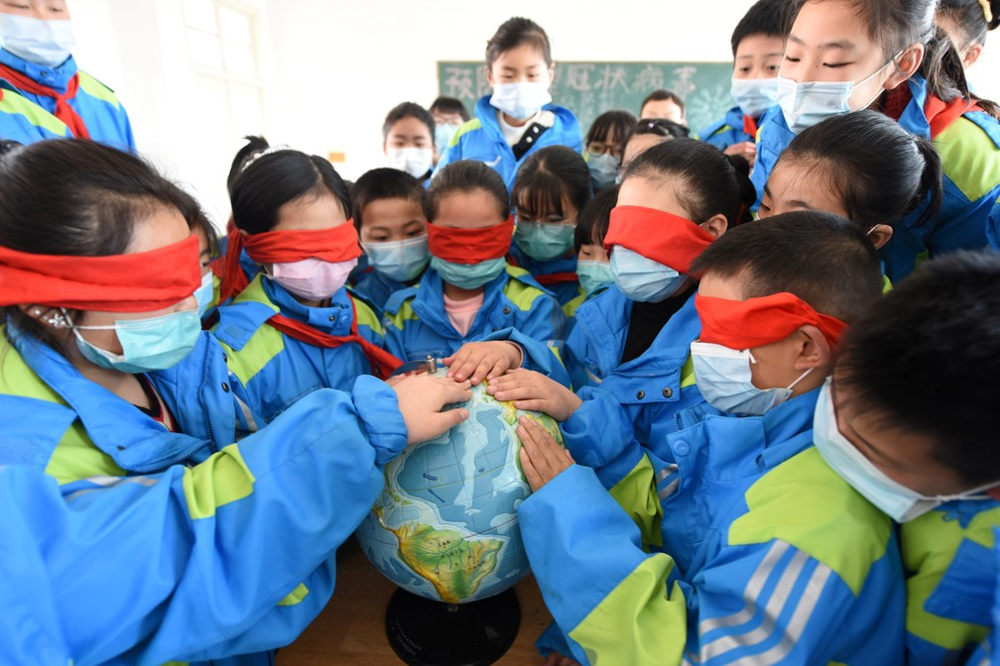

China
ChinaFidelidade: Alta
Realizada ao longo do mês de abril, a reabertura dos mercados de produtos frescos da China, conhecidos como wet markets (mercados molhados) é fonte de crescente pressão internacional. Isso porque estudiosos do novo coronavírus acreditam que um destes locais, especificamente o da cidade de Wuhan, foi o ponto de início a pandemia. Além de vegetais, frutas e legumes, essas feiras também vendem carnes e animais vivos, incluindo espécies selvagens. Esses bichos carregam patógenos que podem, eventualmente, migrar para os seres humanos. No caso da Covid-19, a hipótese mais provável é que o coronavírus veio de pangolins, um mamífero de pequeno porte, ou de morcegos.
Fonte : Veja - 21/04/2020
Fidelidade: Alta
WUHAN, China — A cidade chinesa de Wuhan, berço da Covid-19, revisou nesta sexta-feira o número oficial de vítimas fatais em razão da doença, somando mais 1.290 mortes à contagem inicial, um aumento de 50%. A recontagem, que segundo as autoridades corrige "lapsos" na contagem dos casos no início da pandemia, veio em meio a questionamentos internacionais sobre os dados divulgados pela China e especulações de que poderia tê-los acobertado — algo que Pequim nega com veemência.
Com os dados recém-divulgados, o número total de mortos em decorrência da Covid-19 em Wuhan, capital da província de Hubei, passou de 2.579 para 3.869. Isto fez com que o número de mortes registradas na China continental passasse de 3.346 para 4.636, um aumento de quase 40%. Para além dos dados retroativos, o país não registrou nenhuma nova morte em razão do coronavírus nas últimas 24 horas.
Fonte : Globo - 17/04/2020
Fidelidade: Baixa
Uma província do noroeste da China que está na linha de frente da batalha do país contra o coronavírus relatou nesta terça-feira (21) seus primeiros casos em quase três semanas, todos envolvendo viajantes do exterior, enquanto as infecções importadas começaram a se estabilizar em outros locais.
Como outros países atingidos pela pandemia, a China ordenou restrições rigorosas para recém-chegados, como quarentena obrigatória, além de reduzir os voos internacionais e limitar a entrada de estrangeiros, inclusive viajantes a negócio.
Fonte : Globo - 21/04/2020
(Deslize sobre o gráfico para ver casos em cada dia)